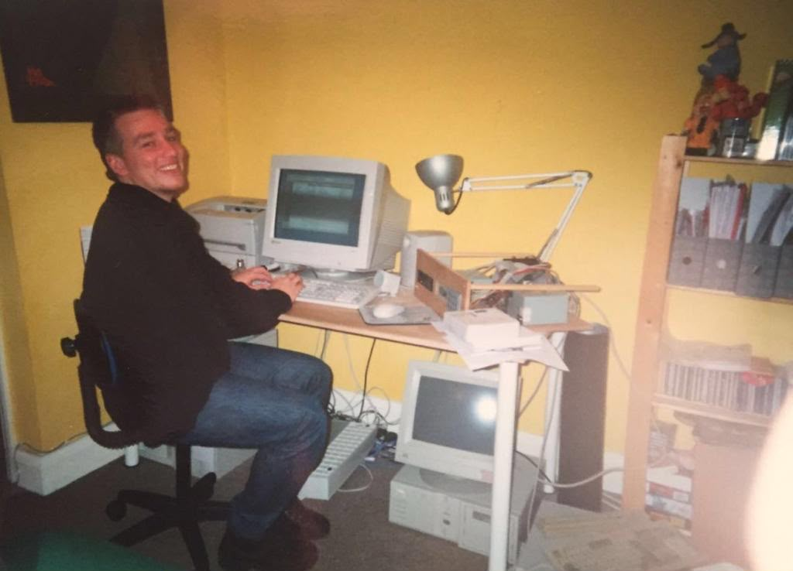
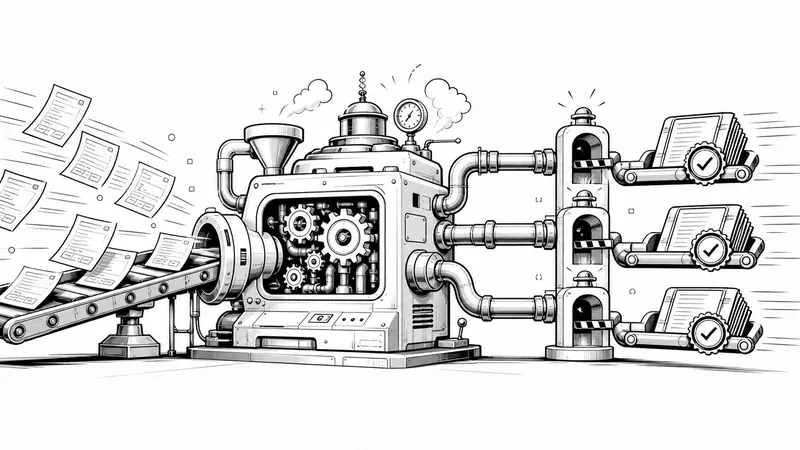
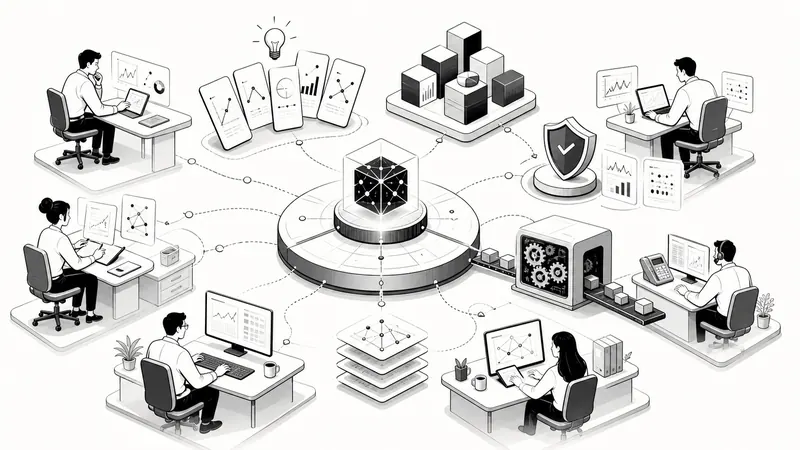
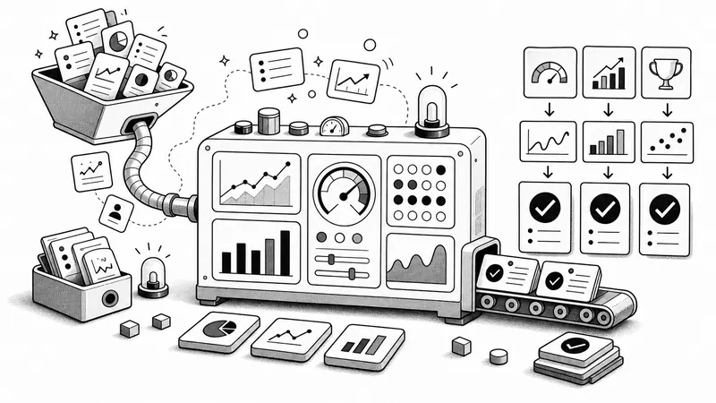
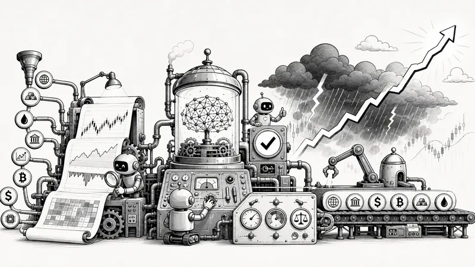
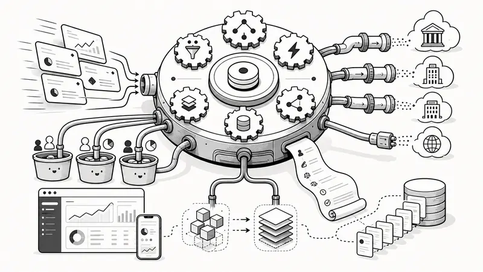

MP3 Home Player
This was the first time I brought hardware, server software and a desktop application together as one product: a standalone home audio unit with its own networked music library.

A builder’s story
Looking back, the work feels less like a list of jobs and more like one long conversation with the same kinds of problems. Each build taught me something, and many of those lessons found their way into the next.
Seven chapters. Forty-six builds, startups and ideas. One route through them.
Chapter 01 -
I started with small, practical things I wanted to fix. Before long, that curiosity had grown into hardware, publishing, digital services and my first attempts at building companies.
A self-taught Visual Basic tool led me towards a technical degree, connected products and, eventually, professional financial software.
This was the first time I brought hardware, server software and a desktop application together as one product: a standalone home audio unit with its own networked music library.

Looking back, I was already doing the thing I still enjoy most: noticing an everyday frustration and wondering whether a thoughtfully designed system could make it easier.
Then the setting changed completely: from personal and consumer products to the dense operational world of hedge-fund trading.
Chapter 02 -
I entered financial technology through the practical end of the problem: first capture a trade, then bring many trades together, then understand the whole lifecycle around them.
At Beauchamp Financial Technology, browser interfaces, Oracle data and C++ systems turned my product curiosity into real financial-market craft.
TradeManager brought everything I had been learning into one enterprise product, from rapid trade capture and electronic execution to the workflow surrounding both.

With each build I understood a little more of the job around the screen. What began as recording a trade became a consolidated view, then a product responsible for the wider workflow. I would return to that pattern years later.
Once I could see the workflow as a whole, the next question felt natural: could software also improve the decisions moving through it?
Chapter 03 -
Inside a hedge fund, I saw how much better the work became when research, communication, market data, portfolios and analytics stopped living in separate tools.
The software was no longer simply supporting the front office. Built closely with the people using it, it became part of the fund’s recognised advantage.
This platform connected the full decision: the research behind an idea, the people responsible for it, its place in the portfolio and risk, and the trading that followed.

They all try to shorten the distance between knowing something and doing something useful with it. Research reaches the right person, data becomes understandable, portfolio changes become orders and performance becomes a chance to learn.
By then, the tools were starting to feel like products in their own right. I wanted to see whether a company could grow around that specialist knowledge.
Chapter 04 -
This chapter taught me two different kinds of scale: how to turn specialist software into a company, and how to make complex financial operations dependable across countries and teams.
Capital Coders opened the founder path. BTG Pactual widened my responsibility from individual applications to international development capability.
TraderAnalytics grew into a London hedge-fund software consultancy. Suddenly I was balancing product ideas, client delivery, financial-domain engineering and the day-to-day reality of running a company.

Running a company and supporting global operations taught me the same lesson from different directions: important work cannot depend on one person remembering everything. These tools made specialist knowledge repeatable and visible.
Automation was no longer just helping people trade. Soon, the software and the trading strategy would become the same system.
Chapter 05 -
This was a turning point. The code was no longer beside the investment process; it was making portfolio decisions. At the same time, my ideas began reaching beyond markets into personal data, trust, place and organisational life.
My role moved from builder to systematic trader, then into international delivery and global technology leadership.
I co-designed and back-tested a multi-portfolio, multi-asset model, then automated the journey from signal to execution. It returned 10% before being discontinued in 2012.

This is where my field of view widened. I was still building systems, but the questions now included who owns personal data, how context survives and how people make sense of complicated organisations.
By then, architecture, markets and product thinking no longer felt like separate parts of my experience. They were ready to come together in a modern SaaS company.
Chapter 06 -
Years of building one-off institutional systems came together as a connected product family: order management, communication, notifications and knowledge sharing designed side by side.
With HEDGD, I was writing code while also carrying responsibility for the company, the product and the architecture behind a multi-asset workflow platform.
HEDGD was my attempt to bring the parts together as a company: multi-asset order management, structured execution, useful notifications and better ways to share knowledge inside a firm.

I kept running into the same human problem: important things arrive mixed in with everything else. These products gave instructions a workflow, updates a controllable channel and short reports a place where others could find them.
The next step was to apply everything I had learned about workflow and research to the sheer volume of institutional information itself.
Chapter 07 -present
By now, several old questions had met in one place. How do you keep useful information? How do you discover what matters? And how do you give busy people enough context to act with confidence?
My current work brings financial research, architecture, product judgement and hands-on engineering together. It does not replace the earlier chapters; it depends on them.
Harkster uses AI to help institutional researchers get more from the information they already receive: finding consensus, overlooked trade ideas and market-moving events through tailored assistants and integrations.
The technology is new, but the frustration is familiar. Valuable information still arrives fragmented, quickly and without enough context. AI now helps, but it sits inside a workflow shaped by years of building research and market systems.
The path reaches the present here. The questions underneath it have been travelling with me for much longer.
What kept returning
I did not name these themes at the time. They are simply the patterns I can see now when I step back and look at the work as a whole.
I keep wanting to understand the work around the screen, then remove the friction that gets in people’s way.
From independent reviews to AI-assisted market intelligence, I have always been drawn to helping people find what matters.
The right information only helps when it reaches the right person, in time, without adding more noise.
Markets taught me to respect speed, uncertainty and the importance of keeping people in control of complex systems.
Many of the ideas ask the same human question: who should own our information, memories, context and recommendations?
MPFrequency, Capital Coders, HEDGD and Harkster each began with the hope that a useful specialist tool could become something durable.
Where it led me
Harkster uses current technology, but the reason I am building it feels familiar. It is still about bringing scattered information together, preserving the context around it and helping someone make a better decision at the moment it matters.